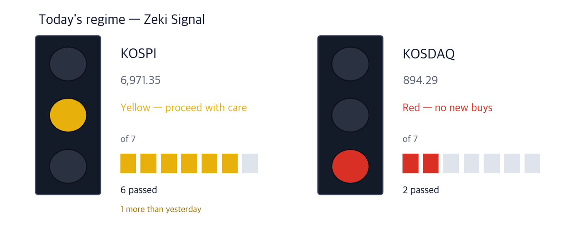

KOSPI 7,003.74 +0.46% | KOSDAQ 893.29 -0.11% | Zeki Signal Yellow |

Green favours buying, yellow says wait, red says hold off. The cells count how many of seven conditions are met - more cells mean the advance is broader. At the October 2 close the KOSPI meets 6 of 7 and reads yellow. The KOSDAQ meets 2 and reads red. Both are unchanged from October 1.
Wait — the stance the signal implies.
The KOSPI rose 0.46% on October 2 to 7,003.74, its first finish above 7,000 since September 23. The KOSDAQ slipped 0.11% to 893.29 after touching 903.81 intraday, its first trade above 900 since July 2. Six of the KOSDAQ's ten largest companies are now in the chip sector, against none at the end of last year.
In New York on October 2 the S&P 500 rose 0.73% to 7,722.72 and the Nasdaq Composite gained 1.19%. US payrolls rose by only 29,000 in September, a third of forecasts, which eased talk of further rate hikes. A day earlier, on October 1, new lows had outnumbered new highs in New York (Investor's Business Daily, Oct 1).
Foreign investors sold a net 21.52 trillion won of main-board stocks in September. They sold less than in February, but their buying fell by more than half. The problem is less selling than not buying. (Korea Economic Daily, Oct 3)
Here is what to do now, before Seoul reopens on Tuesday.
① Chip test makers moved first as memory prices rose. Samsung Electronics asked more than three times today's flagship price for next year's sixth-generation high-bandwidth memory. Pricier chips push makers from sample testing to testing every chip.
② Shortages of AI data-centre parts are expected to last until 2028. Samsung Electro-Mechanics, which makes both chip substrates and capacitors, was bought by foreign investors and institutions alike.
③ Seoul is closed through October 5 and reopens on Tuesday, October 6. Weak US payrolls and the New York rally will be priced in at once at that open. Samsung Electronics reports preliminary third-quarter results on October 8.
The number is 2.9%, September consumer inflation, back in the 2% range. Without the cap on fuel prices it would have been 3.5%, by one estimate. The Bank of Korea expects October inflation around 3%. (Maeil Business Newspaper and Korea Economic Daily, Oct 3)
| Date | What to watch | What it changes |
|---|---|---|
| Tue Oct 6 | First session after the holiday | Weak US payrolls and the October 2 New York rally are priced in at once |
| Thu Oct 8 | Samsung Electronics preliminary Q3 results | With its 15 trillion won buyback nearly done, sets the direction for chip large caps |
| Fri Oct 9 | Hangul Day holiday | Cuts the week to three sessions |
Samsung Electronics has quoted next year's sixth-generation high-bandwidth memory at the mid-to-high 4 dollars per gigabit. Its current fifth-generation flagship sells for about 1.5 dollars. Most of next year's volume is agreed, and price talks should finish this month.
When each chip costs more, each defect costs more. Hanwha Asset Management says makers are moving from sample testing to testing every chip. Back-end packaging firms and test-equipment makers take that demand. (Maeil Business Newspaper, Oct 3)
| Close | Day | Week | 20 sessions |
|---|---|---|---|
| 53,000 won | -0.38% | +22.40% | +70.69% |
| 3 months | Zeki Strength | From 1-yr high |
|---|---|---|
| +145.37% | 97 | -0.38% |
| Who | EXICON, a maker of equipment that tests memory chips. |
| What | Closed at 53,000 won on October 2, down 0.38%. It rose 22.40% over the week. |
| When | October 2, the last session before a three-day holiday. |
| Where | Listed on the KOSDAQ. It trades about 21.9bn won a day. |
| Why | Testing every memory chip needs more test equipment. |
| How | Volume was 1.29 times its 50-day average, and it closed just below its one-year high. |
| Close | Day | Week | 20 sessions |
|---|---|---|---|
| 11,460 won | +3.06% | +8.42% | +97.59% |
| 3 months | Zeki Strength | From 1-yr high |
|---|---|---|
| +94.57% | 94 | 0.00% |
| Who | SFASemicon, which packages and tests memory chips for others. |
| What | Closed at 11,460 won on October 2, up 3.06%, a one-year high. |
| When | October 2. Foreign investors bought again that day and institutions sold. |
| Where | Listed on the KOSDAQ. It trades about 98bn won a day. |
| Why | Testing every chip means more testing is handed out to firms like this one. |
| How | It rose on volume 1.66 times its 50-day average. |
| Close | Day | Week | 20 sessions |
|---|---|---|---|
| 29,150 won | +12.98% | +16.37% | +49.79% |
| 3 months | Zeki Strength | From 1-yr high |
|---|---|---|
| +80.05% | 94 | 0.00% |
| Who | OKins, a maker of sockets used in chip testing. |
| What | Closed at 29,150 won on October 2, up 12.98%, a one-year high. |
| When | October 2, the day the KOSDAQ traded above 900 intraday. |
| Where | Listed on the KOSDAQ. It trades about 15.6bn won a day. |
| Why | More testing wears out the sockets chips sit in, so they are replaced more often. |
| How | It rose on volume 3.80 times its 50-day average. |
One 100MW AI data centre holds about 40,000 GPUs and about 330,000 high-bandwidth memory chips. It also needs about 170,000 chip substrates (FC-BGA) and about 330 million multilayer ceramic capacitors (MLCC). It uses as much power in a year as the city of Pohang. (Korea Economic Daily, Oct 3)
The industry expects these shortages to last at least until 2028. Substrates come from Samsung Electro-Mechanics and LG Innotek. LG Innotek's trend gauge is below zero (−5.93% of price), so we leave it out today.
| Close | Day | Week | 20 sessions |
|---|---|---|---|
| 1,577,000 won | +1.48% | +5.06% | +12.64% |
| 3 months | Zeki Strength | From 1-yr high |
|---|---|---|
| -28.48% | 98 | -30.53% |
| Who | Samsung Electro-Mechanics, a maker of chip substrates and multilayer ceramic capacitors. |
| What | Closed at 1,577,000 won on October 2, up 1.48%. |
| When | October 2. Both groups were net buyers that day too. |
| Where | Listed on the main board. It trades about 904.2bn won a day. |
| Why | Both the substrates and the capacitors a data centre needs are its core products. |
| How | High-end server substrates were named the tightest part in the supply chain. |
Iljin Electric disclosed on October 2 that it won the grid link for a British offshore wind farm. The underground extra-high-voltage cable order is worth 104 million pounds (about 187.1bn won). With a July order, the project totals 271.6bn won, the company's largest cable contract. (Hankyung, Oct 3)
HD Hyundai Heavy Industries is also building an offshore wind substation off Taean. Its trend gauge is below zero, so we leave it out today. (Maekyung, Oct 3)
| Close | Day | Week | 20 sessions |
|---|---|---|---|
| 86,000 won | +3.24% | +5.13% | +27.41% |
| 3 months | Zeki Strength | From 1-yr high |
|---|---|---|
| +3.12% | 82 | -40.32% |
| Who | Iljin Electric, a maker of extra-high-voltage cable and transformers. |
| What | Closed at 86,000 won on October 2, up 3.24%. Volume was 1.82 times the 50-day average. |
| When | The order was disclosed on October 2. |
| Where | The link between a British offshore wind farm and land. The company is listed on the main board. |
| Why | Power made at sea needs extra-high-voltage cable to reach land. |
| How | It supplies underground extra-high-voltage transmission cable. |
Hyundai Motor Group sold 506,200 vehicles in the US in the third quarter, its first quarter above 500,000, with sales of petrol-electric models up 53%. (Maeil Business Newspaper, Oct 3)
Yet Hyundai Motor shares fell 8.2% over 20 sessions. Foreign investors and institutions both sold, and the trend gauge is below zero (−7.75% of price). We will cover it once sales show up in the share price.
| Name | ①up 20d | ②Str. 90+ | ③For. buy | ④Inst. buy | Met | Weight |
|---|---|---|---|---|---|---|
| EXICON (092870) | O | O | O | O | 4/4 | Well grounded |
| SFASemicon (036540) | O | O | O | X | 3/4 | Grounded |
| OKins (080580) | O | O | O | O | 4/4 | Well grounded |
| Samsung Electro-Mechanics (009150) | O | O | O | O | 4/4 | Well grounded |
| Iljin Electric (103590) | O | X | X | O | 2/4 | Needs checking |
The four columns ask: ① up over 20 sessions ② Zeki Strength 90 or higher ③ foreign net buying over 20 sessions ④ institutional net buying over 20 sessions. The count of O sets the weight of evidence. Of today's 5 names, 5 pass ①, and 4 each pass ②, ③ and ④. Test equipment and substrates have price and money behind them; the offshore wind cable maker has the order but not yet the money.
| Name | Foreign / Inst, 20d | Volume | How to read it |
|---|---|---|---|
| SFASemicon 036540 | F +15.4 · I -5.3 | 1.70x | Caution — Only foreigners bought; institutions sold |
| Posco International 047050 | F -1.6 · I +18.4 | 0.38x | Caution — Only institutions bought; foreigners sold |
| POSCO DX 022100 | F -0.9 · I +9.8 | 0.26x | Caution — Only institutions bought; foreigners sold |
| Woori Financial Group 316140 | F +31.8 · I +3.3 | 1.05x | Check✓ — Both bought, but on thin volume |
| Korean Air Lines 003490 | F +8.7 · I +2.2 | 0.81x | Check✓ — Both bought, but on thin volume |
| SK Hynix 000660 | F -6.3 · I +0.1 | 0.58x | Caution — Only institutions bought; foreigners sold |
| Daewoo Engineering & Construction 047040 | F -5.6 · I -2.5 | 1.04x | Wait — Both sides selling, but volume has dried up |
| Doosan Enerbility 034020 | F -7.2 · I -0.3 | 0.67x | Wait — Both sides selling, but volume has dried up |
| LG Display 034220 | F -8.0 · I -0.6 | 0.60x | Wait — Both sides selling, but volume has dried up |
| Netmarble 251270 | F -11.1 · I -0.2 | 0.39x | Wait — Both sides selling, but volume has dried up |
| Stock | Net shares, 20 days | Zeki Strength | 20 trading days | As of |
|---|---|---|---|---|
| Woori Financial Group 316140 | +31,830,909 | 66 | -2.2% | 10-02 |
| SFASemicon 036540 | +15,350,798 | 94 | +97.6% | 10-02 |
| Korean Air Lines 003490 | +8,670,263 | 73 | +6.7% | 10-02 |
| Koh Young 098460 | +3,424,825 | 81 | +22.8% | 10-02 |
| HYUNDAI MOVEX 319400 | +2,294,251 | 72 | -3.7% | 10-02 |
| Stock | Net shares, 20 days | Zeki Strength | 20 trading days | As of |
|---|---|---|---|---|
| Samsung Electronics 005930 | -18,489,897 | 93 | +10.2% | 10-02 |
| Netmarble 251270 | -11,138,579 | 11 | -4.7% | 10-02 |
| LG Display 034220 | -8,023,601 | 10 | -4.9% | 10-02 |
| Doosan Enerbility 034020 | -7,230,443 | 47 | +6.3% | 10-02 |
| Hanon Systems 018880 | -6,672,550 | 60 | +12.8% | 10-02 |
| Stock | Net shares, 20 days | Zeki Strength | 20 trading days | As of |
|---|---|---|---|---|
| Posco International 047050 | +18,354,295 | 52 | +6.4% | 10-02 |
| Samsung Electronics 005930 | +15,575,724 | 93 | +10.2% | 10-02 |
| POSCO DX 022100 | +9,769,685 | 20 | +0.2% | 10-02 |
| Hanon Systems 018880 | +8,454,799 | 60 | +12.8% | 10-02 |
| Macquarie Korea Infrastructure 088980 | +4,872,219 | 28 | -0.4% | 10-02 |
| Stock | Net shares, 20 days | Zeki Strength | 20 trading days | As of |
|---|---|---|---|---|
| SFASemicon 036540 | -5,254,344 | 94 | +97.6% | 10-02 |
| Daewoo Engineering & Construction 047040 | -2,455,205 | 95 | +8.7% | 10-02 |
| Koh Young 098460 | -2,401,599 | 81 | +22.8% | 10-02 |
| NAVER 035420 | -2,011,223 | 28 | -8.0% | 10-02 |
| YCC 232140 | -1,973,920 | 71 | +40.5% | 10-02 |
Even when the story and the price agree, we check the money separately. The table asks whether October 2 volume actually cleared the bar to beat (the 50-day average).
| Name | Cleared? | Flows (as of) | How to read it |
|---|---|---|---|
| EXICON (092870) | 1.29x ✓ | F buy · I buy (10/2) | Watch — both bought, volume up |
| SFASemicon (036540) | 1.66x ✓ | F buy · I sell (10/2) | Caution — only foreigners bought |
| OKins (080580) | 3.80x ✓ | F buy · I buy (10/2) | Watch — both bought, volume up |
| Samsung Electro-Mechanics (009150) | 0.66x ✗ | F buy · I buy (10/2) | Check — both bought, thin volume |
| Iljin Electric (103590) | 1.82x ✓ | F sell · I buy (10/2) | Caution — only institutions bought |
"Cleared?" is October 2 volume divided by the 50-day average; above 1x earns a ✓.
| Weight of evidence | Names | Beat KOSPI | Winners led by | Losers trailed by | All averaged |
|---|---|---|---|---|---|
| Well grounded | 15 | 12 / 15 | +8.30%p | -4.35%p | +5.77%p |
| Grounded | 15 | 7 / 15 | +6.66%p | -5.53%p | +0.16%p |
| Needs checking | 35 | 11 / 35 | +7.04%p | -4.14%p | -0.63%p |
| Thin | 1 | 1 / 1 | +7.22%p | none | +7.22%p |
| No basis | 2 | 0 / 2 | none | -5.15%p | -5.15%p |
| Excluded | 1 | 1 / 1 | +4.40%p | none | +4.40%p |
| Well grounded 15 | +5.77%p | ||||||
| Grounded 15 | +0.16%p | ||||||
| Needs checking 35 | −0.63%p | ||||||
| Thin 1 | +7.22%p | ||||||
| No basis 2 | −5.15%p | ||||||
| Excluded 1 | +4.40%p |
The centre line is KOSPI. Right is ahead, left is behind. The grey number is how many names are in that band.
Of 15 Well grounded names, 12 beat KOSPI. Those 12 led by 8.3%p on average; the 3 that lost trailed by 4.4%p. All together: +5.8%p.
After 20 sessions (about a month): results first arrive on Oct 14; they are added here as a table as they fill.
After 60 sessions (about three months): results first arrive on Dec 9; they are added here as a table as they fill.
Verdict. Once both markets together reach 60 cases for a window, we run the test fixed in advance and print what it says. 5 sessions, 156 cases — Not shown to beat the index. But higher-grade names did better. (46.8% beat the index) · 20 sessions: 0 of 60 · 60 sessions: 0 of 60
| When | What to watch | What it means |
|---|---|---|
| First 30 minutes (09:00–09:30) | Does OKins open above its October 2 close of 29,150 won? | Shows whether profit-taking comes first after a one-day surge and three days off |
| During the session | Do foreign investors turn to net buying on the main board? | If foreigners buy again, the rebound can spread to chip large caps |
| Last 30 minutes (15:00–15:30) | Does the KOSPI hold above 7,003.74? | That is the October 2 close, its first finish above 7,000 since September 23 |
At the October 6 open, watch whether chip test makers hold their October 2 prices. Samsung Electronics reports preliminary results on October 8. With its 15 trillion won buyback nearly finished, the question is who absorbs foreign selling. Markets close on October 9 for Hangul Day.
This is the Rex Way, ZekiRex™